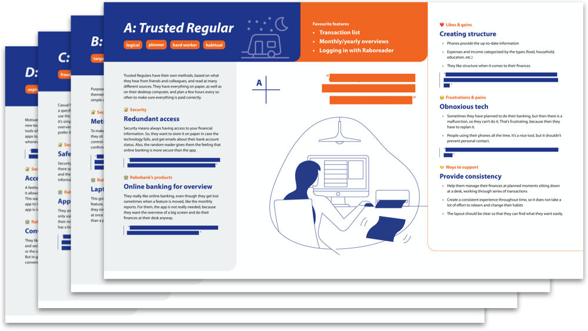
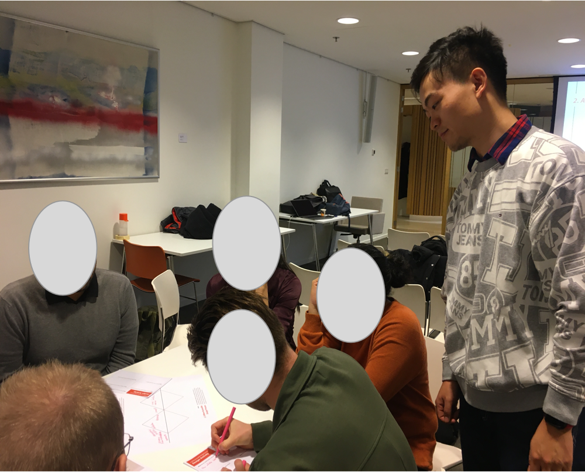

Support mobile banking app experience
Rabobank is working on the development of the mobile banking app. With the wide range of applications, more and more people enjoy the convenience of the banking app. However, there is still a significant target group that doesn’t use the app. The aim for this project was to understand users who do make use of online banking, but do not make use of the smartphone app. This research should help the further development of the app and the complete service of Rabobank and better support these people who are not using the app.
Context
mapping
The foundation of this project is contextual research. To do this, seven, one hour home interviews across the Netherlands were conducted. Users’ latent needs were revealed with interviews and sensitising booklet.
Assumption
Map
The assumption map is used to get the general sense of the project. What kind of directions can be interesting and potential for developing.
Sensitizing
Booklet
The sensitising booklet was prepared based on the assumption map. The sensitising booklet was divided in five days. The question order was from present to past experiences and then to the future dreams.
Interview
Guide
The interview guide was based on assumption map and sensitising booklet. The goal was to dive into users' behaviour.
After the interview guide was designed, pilot interview was done to check the wordings, the timing, and the flow of questions.
Interview
Home visits
7 participants
Analysis
Transcribing
Statement cards
Clustering
Patterns
FRAMEWORK
Using the clusters of insights from the contextmapping process, a framework was created with two axes which represent fundamental differences in behaviour and attitude.
With these two axes, personas were built based on the four resulting quadrants (A, B, C, and D).
With these two axes, personas were built based on the four resulting quadrants (A, B, C, and D).
persona
workshop
A workshop was organized within the design department of Rabobank. It helped the design team to learn about the findings and understand how to apply those findings in their work. During the workshop, Contextmapping was also introduced.
